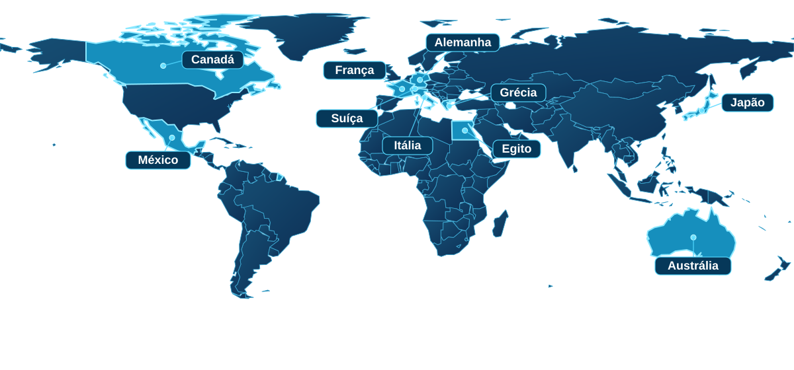

ATLAS / EXPLORAÇÃO CULTURAL
O mundo está cheio de histórias para descobrir.
Explore dez países por meio da história, da arte, da natureza e da cultura. Conheça nossos destinos e comece sua viagem pelo Atlas.
Explorar países10Países
10Temas culturais
01Mundo para explorar
UMA VIAGEM PELO MUNDO / 10 DESTINOS
Um mundo de possibilidades
Conheça o universo do Atlas. Para visitar um país, escolha um dos cartões na seção logo abaixo.
ATLAS / MAPA-MÚNDI
ILUSTRAÇÃO GLOBAL

● Explore dez culturas e histórias
ESCOLHA UM PAÍS NOS CARTÕES ABAIXO
Ilustração estilizada para representar a exploração global do Atlas.
DESCUBRA O ATLAS
Nossos países
Clique em qualquer parte do cartão para visitar o país e conhecer o tema preparado pela equipe.
01 / DESTINO
México
Música e mitologia
02 / DESTINO
Grécia
Gastronomia
03 / DESTINO
Egito
Monumentos históricos
04 / DESTINO
Itália
História
05 / DESTINO
Canadá
Natureza
06 / DESTINO
Alemanha
Guerras e impactos políticos
07 / DESTINO
Suíça
Turismo e oportunidades
08 / DESTINO
Austrália
Biodiversidade
09 / DESTINO
Japão
Evolução das artes visuais
10 / DESTINO
França
Museus, artistas e moda
Um mundo de conhecimentos
O Atlas é um projeto acadêmico desenvolvido em equipe. Cada país apresenta um assunto diferente, mas todos fazem parte da mesma experiência de exploração.